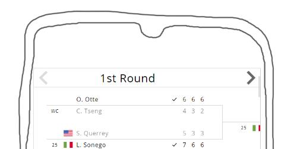

<!DOCTYPE html>

<head>
    <meta name="viewport" content="width=device-width, initial-scale=1">

    <style>
        html {
            visibility: hidden;
            opacity: 0;
        }

        .common-playoffs-wrapper.first {
            resize: horizontal;
            overflow: auto hidden;
        }
    </style>
</head>

<body>
    <script type="module">
        import * as html_partials from './html_partials.mjs'
        import { insert_styles } from '../lib/utils/utils.mjs'
        import { examples_common_styles } from './examples_common_styles.mjs'
        import { createPlayoffs } from '../lib/lib.mjs'
        import { get_some_data } from '../test_data/get_some_data.mjs'
        import { add_options_manager } from '../options-manager/options-manager.mjs'
        import { create_data_picker } from '../test_data/create_data_picker.mjs'

        insert_styles('', 'common-styles', examples_common_styles)

        document.body.innerHTML = `


            ${html_partials.home_link}
            <div class="heading-2">MOBILE LAYOUT</div>
            <hr />
            <div class="heading-3">Default</div>
            <div class="code">import { createPlayoffs } from 'easy-playoffs'

<span class="bleak-code">// just default stuff: </span>
createPlayoffs(
    data,
    document.querySelector('.playoffs-wrapper'),
    {
        navButtonsPosition: 'overTitles' <span class="bleak-code"> // not necessary but seems a good idea for mobile </span>
    }
)</div>

            <p>
                Easy-brackets tries to be mobile-friendly by default. On narrow screens it adjusts the layout to display only 1 round. (Long player titles will be trimmed)
                <br />
                Resize the parent (or window) to see what happens on smaller screens
            </p>
            <div class="common-playoffs-wrapper first"></div>
            <div class="options-manager-opener">manage options</div>


            <hr class="huge-margin-top" />
            <p>
                Though you can face a situation when you see for instance 1.2 rounds on mobile device and that can be a bit ugly:
                <br />
                
                <br />
                That's because easy-playoffs actually doesn't try to detect a mobile device. It only adjusts the layout when the width of the visible area becomes too narrow to dispaly one round.
                <br />
                You may change this behaviour with <b>useMobileLayout</b> option.
                <br />
                When set to true, it forces mobile layout regardless of screen size.
            </p>
            <div class="code">import { createPlayoffs } from 'easy-playoffs'

createPlayoffs(
    data,
    document.querySelector('.playoffs-wrapper'),
    {<span class="highlighted-code">
        useMobileLayout: true,</span>
        navButtonsPosition: 'overTitles' <span class="bleak-code"> // not necessary but seems a good idea for mobile </span>
    }
)</div>

            <br />
            
            <div class="heading-5 note">Result: mobile layout is forced despite having enough space for multiple rounds:</div>
            <div class="common-playoffs-wrapper second"></div>


            <p>
                So you can measure your device and decide if you need a mobile layout in particular case.
                It makes sense to do this check every time on resize. This can be achieved for example via window.matchMedia:
            </p>
            <div class="code">import { createPlayoffs } from 'easy-playoffs'

const { <span class="highlighted-code">applyNewOptions</span> } = createPlayoffs(
    data,
    document.querySelector('.playoffs-wrapper'),
    {}
)
<span class="highlighted-code">
const mediaQuery = window.matchMedia('(max-width: 768px)')
mediaQuery.addListener(e => applyNewOptions({ useMobileLayout: e.matches }))
</span>
</div>

<div class="heading-5 note medium-margin-top">
    Now mobile layout will be forced every time the window (not the element) gets narrower than 768px.
    <br />
    <small>(But of course there are many other ways to detect mobile, you are free to use any of them)</small>
</div>


<div class="common-playoffs-wrapper third"></div>


            <br />
            <br />
            <div class="note huge-margin-top">
                <div class="heading-4" id="device-pixel-ratio">Device Pixel Ratio</div>
                    <p>
                    If you want easy-playoffs to work on mobile devices, mind the devices with high pixel density.
                        <br />
                    On such devices you may find that your elements look 2 or 3 times smaller than on desktop.
                        <br />
                    Thus for instance a text with font-size of 16px may look very small and hardly readable on high-density displays.
                        <br />
                    By default easy-playoffs tries to prevent this scaling effect and instead provide more or less similar physical sizes across all devices.
                        <br />
                    It does this by multiplying all pixel values by Window.devicePixelRatio.
                        <br />
                    In case you don't like this optimization, set <b>applyDevicePixelRatio</b> option to false.

                    <div class="small-text italic indent">
                        <br />
                        Boring note: devicePixelRatio <b>will not be applied in desktop browsers</b> even with applyDevicePixelRatio set to true.
                        <br />Thus easy-playoffs tries to avoid <i>double zoom</i>.
                        <br />The problem is that in desktop browsers devicePixelRatio reflects the zoom level. (On a page with 150% zoom devicePixelRatio will be 1.5).
                        <br />Thus applying devicePixelRatio on desktop will magnify elements which are already magnified by zoom.
                        <br /><br />
                    </div>
                </p>
            </div> <!-- end note -->


            ${html_partials.footer}
        `


        get_some_data(2).then(data => {
            const first_options = { navButtonsPosition: 'overTitles' }
            const first_playoffs = createPlayoffs(
                data,
                document.querySelector('.common-playoffs-wrapper.first'),
                first_options
            )
            add_options_manager(
                document.querySelector('.options-manager-opener'),
                first_playoffs.applyNewOptions,
                first_options
            )

            /* 
                        createPlayoffs(
                            data,
                            document.querySelector('.common-playoffs-wrapper.second'),
                            { useMobileLayout: true,
                                navButtonsPosition: 'overTitles' }
                        )
            
            
                        const third_playoffs = createPlayoffs(
                            data,
                            document.querySelector('.common-playoffs-wrapper.third'),
                            {}
                        )
            
                        const mediaQuery = window.matchMedia('(max-width: 768px)')
                        mediaQuery.addListener(e => third_playoffs.applyNewOptions({ useMobileLayout: e.matches }))
            */


        })


    </script>

</body>